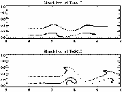
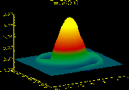
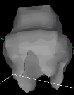

University of Delaware
Associate Professor

| Contact Information | |
| Research Activities | |
| Teaching Activities | |
| Miscellaneous | |
| Links |
Research activities.
24 hour mathematical services: No problem too big or too small.
Fluid dynamics, numerical analysis, vorticity dynamics, flow through porous media and general modeling.Try this multithreaded JAVA applet. By clicking your mouse in the window you can add marker particles ot the differentially rotating axisymmetric flow. Though it is a fun toy, it also demonstrates two principles that I love studying. One is vorticity dominated flows. The other is the role of mixing in fluid flows. Think about this the next time you add cream to your coffee or tea.
I wrote this code to teach myself a little JAVA. It is only Java 1.0, and I will upgrade one day soon... I promise.
BlobFlow (TM): An open
source vortex
code.
Some past research projects:
  
What are these? A river? A snow cone? A wisdom tooth? Hardly... Read on and learn more.
- Vortex methods: These are numerical techniques for simulating fluid flows.
- Wall jet flows: This is a flow generated by blowing fluid tangentially along a wall. Come visit the Wall Jet Page and see some experiment and numerical computations of wall jet flows.
- Vortex monopole dynamics: What happens when you perturb a nice axisymmetric vortex? Come visit The Vortex Monopole Decay Page and see a tripole attractor. There are several related problems that are also active areas of research.
- Multiphase flow through porous media: What happens when oil leaks into the ground? How can we clean up this mess? This was a joint modeling, visualization and high speed communication problem. Come visit Interactive Simulation of Contaminant Evolution through Porous Media to see what we did and why it is important.
- Directional solidification of a binary alloy. Dave Sarocka, Andy Bernoff and I have studied the existence and stability of large amplitude solutions to the Riley-Davis equations.
 Last
modified: 13 February 2001.
Last
modified: 13 February 2001.